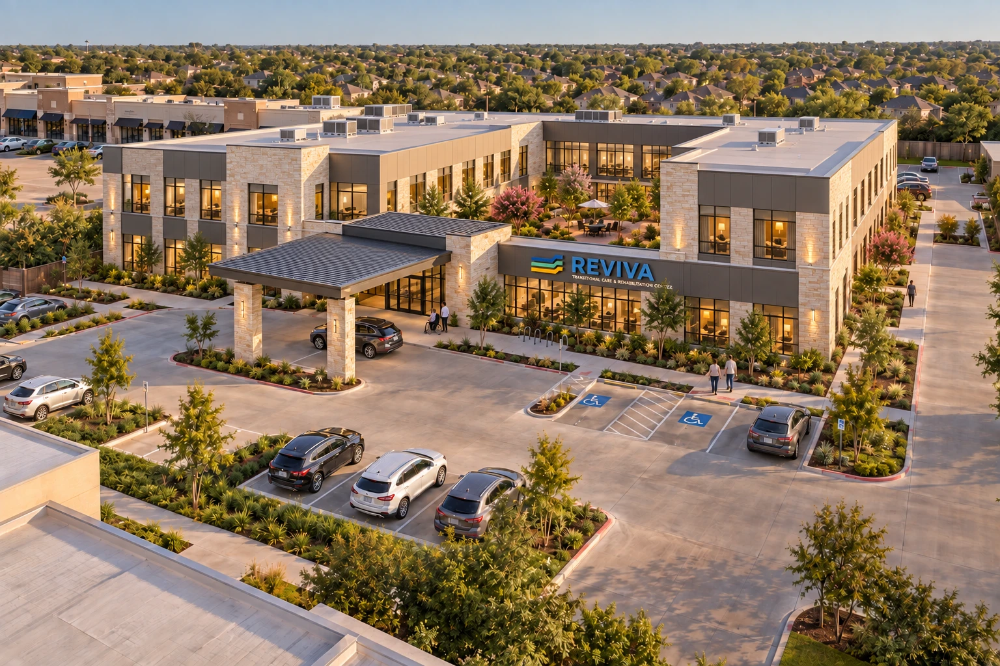
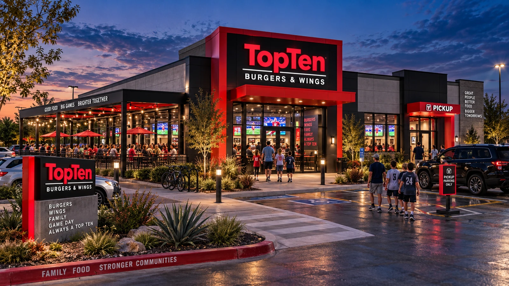
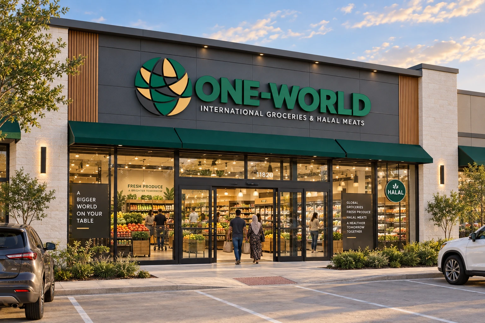

Z-Co.
Z-Co Development Corp develops and sponsors the projects shown on JvFunder and is responsible for executing them.
About Z-Co. ↗





Joint venture opportunities in real estate and operating businesses. Built around clear ownership, disciplined review, and active project oversight.
Z-Co. develops and sponsors the projects. JvFunder is where investors review them and follow their investments.
Z-Co Development Corp develops and sponsors the projects shown on JvFunder and is responsible for executing them.
About Z-Co. ↗JvFunder is where investors discover Z-Co. projects, review the information, and follow their investments after they invest.
How oversight works ↗A dedicated track on JvFunder for ethical funding opportunities: asset-backed investments, profit-sharing structures, and independently reviewed offerings.
Learn more ↗Ethical Capital Partners is the name of a planned investment track on JvFunder. It is not a separate legal entity. Affiliated relationships, fees, and conflicts will be disclosed in each offering.
Z-Co Development Corp is a privately held, vertically integrated real estate company. Founded by Mike Butte in 2003, the firm has completed more than 50 projects across six asset classes, through multiple economic cycles, with zero abandonments.
Z-Co delivers projects through an end-to-end development platform: site selection and underwriting, entitlements, design, capital structuring, construction execution, and exit.
Z-Co’s own residential, healthcare, hospitality, and mixed-use projects, from land acquisition through delivery.
Turnkey project delivery for developers and asset owners who want Z-Co’s execution, without giving up ownership.
Light gauge steel manufacturing capability, built to serve Z-Co’s own projects first.
Provides sponsor and project execution capabilities. Affiliated relationships, fees, and conflicts should be disclosed in each offering.
A proposed review and reporting model: feasibility, budget, and capital structure review; milestones and actual results against the plan; capital use and material change reporting; defined responsibilities and corrective actions.
REAL ESTATE + OPERATING BUSINESSESA clear stake in the venture.
A clearer view of its progress.
JvFunder is built around following your investment, not only making it.
See how capital is being used against the approved budget.
Follow planned versus actual progress for each venture.
Be informed of material changes to a project’s plan, budget, or timeline.
Opportunities will identify which pathway applies in their offering materials.
Real estate equity, business ventures, joint ventures, and other investment opportunities.
Asset-backed investments, profit-sharing structures, and independently reviewed offerings.
Which pathway applies to each opportunity will be identified in that offering’s materials. No project shown on this website is represented as certified or approved under either pathway.
Explore the proposed Z-Co. pipeline. Each opportunity will have its own investment structure, economics, risks, and review process.
Concept renderings illustrate the proposed projects; final designs may change. Concept pipeline only. These entries are not open offerings, investment recommendations, or confirmations of ethical review or approval. Availability, terms, and eligibility will be defined in the applicable offering documents. Existing agreements may affect how a project can be offered.
Our proposed oversight model follows a venture from initial review through execution and exit. The goal is simple: keep investors informed and management accountable.
Proposed reporting categories. Bars are decorative examples, not project data. Intervention rights depend on each venture’s governing agreements. Oversight does not eliminate investment risk.
Explore ventures and understand the opportunity.
Review assumptions, economics, documents, and risks.
Complete the applicable eligibility and subscription process.
Track milestones, capital use, and management updates.
Review outcomes and consider future ventures independently.
JvFunder plans to feature Ethical Capital Partners opportunities with project-specific ownership, profit sharing, and risk allocation. Each offering’s review scope, approval status, and continuing requirements will be clearly identified.
Ethical review is offering-specific. No project shown here is represented as certified or approved by this concept website. Returns and capital are not guaranteed.Joint Venture. The concept gives investors participation in a specific project or fund, with ownership rights and economics defined by that offering’s documents.
JvFunder is a Z-Co. Development Platform. Z-Co. is the developer and sponsor of the projects shown on JvFunder and provides project execution. JvFunder is the investor platform, where investors review information and follow their investments. Affiliated relationships, fees, and conflicts should be disclosed in each offering.
Ethical Capital Partners is the planned dedicated investment track on JvFunder for ethical funding opportunities: asset-backed investments, profit-sharing structures, and independently reviewed offerings. It is a name for the track, not a separate legal entity.
No. This is a concept website. It does not accept investments, process payments, verify eligibility, or provide an investor account. You can explore the concept and prepare a local investor interest brief.
No. Each investment provides only the interests and rights specified in its governing documents. It does not automatically confer ownership in JvFunder, Z-Co., or other ventures.
These will be defined separately for each offering. This website does not establish investment minimums or return targets. Future materials should explain fees, downside scenarios, liquidity limitations, and the risk of loss.
The interest tool stores your selections only in this browser. It does not request contact details or send your brief to Z-Co. You can download it or clear the stored selections at any time.
Prepare your investor interests for a future conversation with the team.